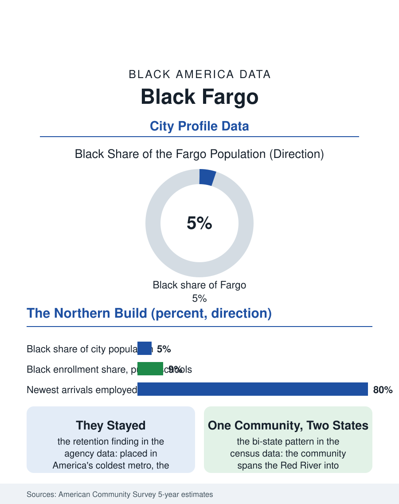

Black Cities
The Top of the Map: Black Fargo
Railroad families and equatorial refugees built a five-percent community in America's coldest metro, and the second generation is simply from Fargo. The Fargo file.

Fargo's Black community, roughly eight thousand people in a North Dakota metro of about two hundred sixty thousand, around five percent of the city itself, mirrors Sioux Falls at the region's northern end: a small historic railroad community transformed within a generation by refugee resettlement and by the growth of a diversified economy of health care, technology, and the great university. The census counts one of the northern plains' two new Black centers. This article reads the Fargo file.
The Northern Pacific and the New Neighbors
Fargo began as a Northern Pacific division point, and its first Black residents were the railroad's people and the service workers of a frontier trade town, maintaining through the twentieth century a small community in the pattern of the northern tier, a congregation, a social network, a presence in a state whose Black population for most of its history could be counted in the hundreds. The transformation arrived on the same schedule as Sioux Falls' and from the same sources: the resettlement agencies that made the Fargo-Moorhead area, straddling the Red River into Minnesota, a placement center for refugees from Sudan, Somalia, Liberia, Bosnia's era and after, and Congo, among others, and the meatpacking and manufacturing employers whose labor demand gave the arrivals their first rung. The Microsoft campus and the technology layer, the two health systems' expansion, and North Dakota State University's growth composed the professional tier above the entry economy, and the community's composition, like its Dakota sibling's, flipped majority-immigrant within a generation, the historic families becoming the elders of a community mostly newer than the century.
The Numbers on the Red River
The American Community Survey profile reflects a young, working, rapidly naturalizing population in a metro whose unemployment runs among the nation's lowest and whose housing, while repricing with the region's growth, retains the plains' relative accessibility. Employment runs through the packing and food processing plants of the valley, the hospitals, the university, and the technology and insurance back offices, with the duration gradient in the income data showing the resettlement curve in its northern form: steep arrival poverty, rapid employment attachment, homeownership entering the data within the decade for the earliest cohorts, whose east side and north side purchases replicate the Sioux Falls ladder. The public schools on both banks of the river enroll one of the most internationally diverse student bodies of any small American metro, their English learner rosters and their Black enrollment shares the transformation's most visible statistics, watched by the state's education establishment as the leading edge of a demographic change the rest of North Dakota experiences mainly through this metro. The civic file shows the first generation of representation building at the school board and commission level, and the institutional map filling in, African congregations and mutual associations, groceries and remittance storefronts along the old commercial corridors, alongside the historic Black church whose congregation now spans the community's whole history in a single membership.
Winter as a Filter, Community as the Answer
Every plains file in this atlas contains the weather as an unspoken variable, and Fargo's is the most severe: the Red River valley's winters are among the coldest inhabited climates in the United States, and the resettlement of families from equatorial Africa into forty-below wind chills is a fact the oral histories record with wonder at both the agencies' choice and the families' response, which was to stay, buy houses, and raise second generations for whom the cold is simply home. Retention is the file's proudest statistic in the agencies' data: the secondary migration that drains other placement cities toward larger African communities has touched Fargo lightly, because the jobs held, the housing ladder worked, and the community reached the self-sustaining size where newcomers arrive to a going concern. The forward file duplicates the Dakota pattern with a Minnesota accent, the metro's bi-state growth spreading the community across the river into Moorhead and Dilworth, its institutions federating across a state line the census files separately. Fargo's Black population closes its file as the northernmost substantial entry in this atlas, five percent of a city most Americans know as a film title, built by railroad families who never left and refugee families who chose, against the testimony of the thermometer, not to. The census counts eight thousand at the top of the map. The second generation, doing its homework in the January dark, counts itself simply as from Fargo, which was the entire point of both migrations.
More in Black Cities
Black Atlanta: Population, Distribution, and Growth of a Black Metropolis
Metro Atlanta holds more than two million Black residents — roughly one in three, second only to New York. The suburban distribution, migration history, and composition of Black Atlanta in the census data.
Black New York: The Largest Black Population in America
The New York metropolitan area holds about 3.4 million Black residents — more than any metro in the nation — and the city itself about two million. The census profile.
Black Washington: The District and the Metro
The Washington metro holds about 1.6 million Black residents, and the District itself — long a majority-Black city — now records a Black share near 41 percent. The census profile.
Source: U.S. Census Bureau, American Community Survey 5-year estimates for Fargo, ND; North Dakota refugee resettlement program records.